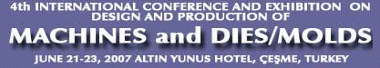
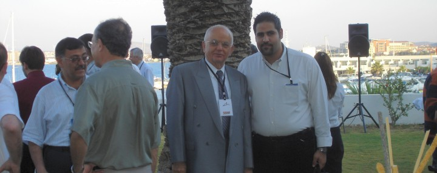

| 21-24 Haziran 2007, Altýn Yunus Oteli, Çeþme-Ýzmir'de yapýlan, 4th International Conference and Exhibition on Design and Production of Machines and Dies/Molds veya Türkçe adýyla 4. Uluslararasý Makina ve Kalýp/Model Tasarým ve Ýmalat Kongresi
ve Sergisi baþarýyla sonuçlanmýþtýr.

Kongre Programýnda da görüleceði üzere, Kongre 21 Haziran Perþembe akþamý bir Hoþgeldiniz Kokteyli ile baþlamýþ ve yurt içinden ve dýþýndan gelen katýlýmcýlar birbirleri ile bir tanýþma fýrsatý bulabilmiþlerdir. Kongre 22 Haziran 2007, Cuma günü sabahý saat 8:45 de açýlýþ oturumu ile baþlamýþtýr. Ýlk açýlýþ konuþmasý Kongre baþkaný Prof. Dr. Bilgin Kaftanoðlu tarafýndan yapýlmýþtýr. Kongrenin amaçlarý, içerdiði konular, önceki Kongreler, organizayon ve uluslararasý komiteler hakkýnda bilgiler verilmiþtir. Kongrede beþ kýtadan ve yirmibir ülkeden 112 katýlýmcýnýn yer aldýðý belirtilmiþtir. Kongreye toplam 98 özet sunulduðu, bunlardan 64'ünün en son kitapta yer alan bildiriye dönüþtüðü ve 62'sinin de kongrede üç parallel oturumda sunulacaðý belirtilmiþtir Ayrýca basým için geç kalan bildirilerin ve sanayicilerin çalýþmalarýný tanýttýklarý onbeþ sunumun da dördüncü parallel oturumda yapýlacaðý belirtilmiþtir. Kongrenin sponsorlarýna teþekkür edilmiþtir. Sergiye katýlan 13 Firma ve Kuruluþa teþekkür edilmiþtir.Katýlýmcýlara, Kongre ve sunum düzeni hakkýnda bilgiler verilmiþtir.

Açýlýþ oturumunda daha sonra TOFAÞ ve FORD Firmalarýndan kalýp imalat yöneticileri Erkan Polat ve Orhan Eser, Türkiye'de ve Firmalarýnda kalýp tasarýmý ve imalatý hakkýnda aydýnlatýcý bilgiler vermiþlerdir ve katýlýmcýlara sanayi adýna hoþgeldin demiþlerdir.
Açýlýþ oturumu daha sonra Ohio State Üniversitesi öðretim üyelerinden ve Hassas Þekillendirme Merkezi Direktörü Prof. Taylan Altan'ýn konuþmasý ile devam etmiþtir.Kendisi metal þekillendirme hakkýnda dünyadaki son geliþmeleri ve kullanýlan malzemeleri sunmuþ ve yeni teknolojilere deðinmiþtir.
Açýlýþ oturumunun son konuþmasý University of British Columbia öðretim üyesi Prof. Dr. Yusuf Altýntaþ tarafýndan talaþlý imalat ve sanal modellemeri konusunda yapýlmýþtýr. Kendisi bu alanda son yeniliklere deðinmiþ ve bu alanda geliþtirdikleri yazýlým hakkýnda bilgi vermiþtir.
Açýlýþ oturumu kahve molasý ile sonlanmýþtýr. Bu moladan sonra takibeden iki gün içinde üç parallel oturum halinde basýlmýþ bildiriler, dördüncü parallel oturumda da basýlmamýþ bildiriler ile sanayi sunuþlarý yer almýþtýr. Bu oturumlarýn temalarý:
1- Sac metal þekillendirme
2- Ekstrüzyon, dövme ve haddeleme
3- Talaþlý imalat
4- Döküm ve kaynak
5- Yüzey iþlemleri, ultrasonic temizleme ve sert kesici takýmlar
6- Lazer ve elektro-erezyon
7- Kalite control, hassas ölçme ve optic ölçme yöntemleri
8- Kalýp ve takým imalatý
9- Takým tezgahlarý ve robotlar
10- Malzemeler
11- Kalýp ve takým sanayii
12- Sanayi sunuþlarý
Kahve molalarýna ve yemeklerde katýlýmcýlar aralarýnda görüþme fýrsatlarýný elde etmiþlerdir. Ayrýca 23 Haziran akþamý verilen Gala yemeðinde ve 24 sabahý verilen Brunch'da katýlýmcýlarýn biraya gelerek samimi bir ortamda fikir alýþveriþi yapmalarý saðlanmýþtýr.
23 Haziran 2007, Cumartesi günü öðlen ve akþam saatlerinde yapýlan Türk katýlýmcýlar arasýnda yapýlan toplantýlar da çok verimli geçmiþ ve kendileri bundan sonra yapýlacak toplantýlarda dikkate alýnmasý gereken güzel fikirler ortaya koymuþlardýr. Türkiye'de, belli aralýklarda Türkçe eðitici çalýþtaylar yaparak sanayide çalýþanlarýn yetiþmelerini saðlamak bunlar arasýndadýr. Ayrýca bir adres listesi oluþturulmuþ ve bu alanda deðiþik ülkelerde çalýþan Türkler arasýnda iþbirliðinin artmasý istenmiþtir.
Kongre sonrasýnda katýlýmcýlardan yazýlý ve sözlü övgüler alýnmýþtýr ve bir sonraki kongrenin ne zaman yapýlacaðý birçok kiþi tarafýndan sorulmuþtur. Kongrenin yeniden 2009 veya 2010 da düzenlenmesi düþünülmekte ve bu arada da Türkiye'de Türkçe olarak bazý eðitici etkinliklerin düzenlenmesi planlanmaktadýr. Geliþmeler ve bilgilendirmeler için internet sitesi (www.diemold.org) sürekli açýk tutulacaktýr. Ayrica ilgilenen kiþiler ve kurumlar aþaðýda iletiþim bilgileri verilen Konferans Baþkaný ile de temasa geçebilirler. 2007, 2004, 2001 ve 1997 Kongrelerinin yayýnlarýndan almak isteyenler de Konferans Baþkaný ile temasa geçebilirler.
Daha fazla bilgi için:
Prof. Dr. Bilgin Kaftanoðlu
Konferans Baþkaný
Makina Mühendisliði Bölümü
Orta Doðu Teknik Üniversitesi
06531 Ankara
Tel: (312) 210 25 74
e-posta: bilgink@metu.edu.tr
Ekler:
Not-1: TurkCADCAM.net, bu etkinliðin tanýtým sponsorlarýndandýr.
Not-1: Kongre'de sunulan bazý makaleler için týklayýnýz (Ýngilizce, pdf) |